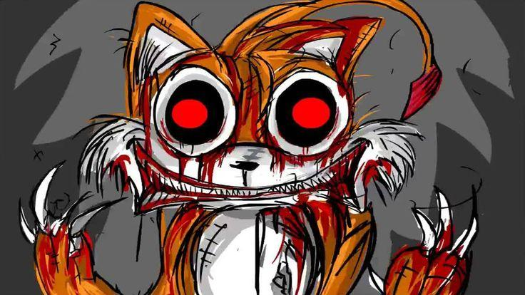
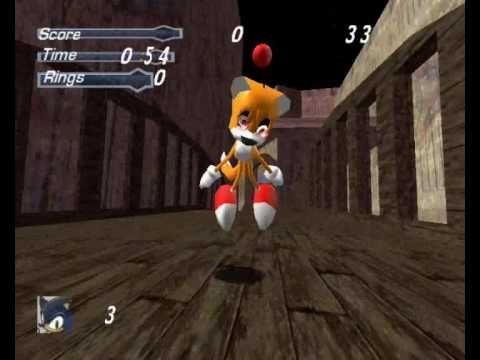
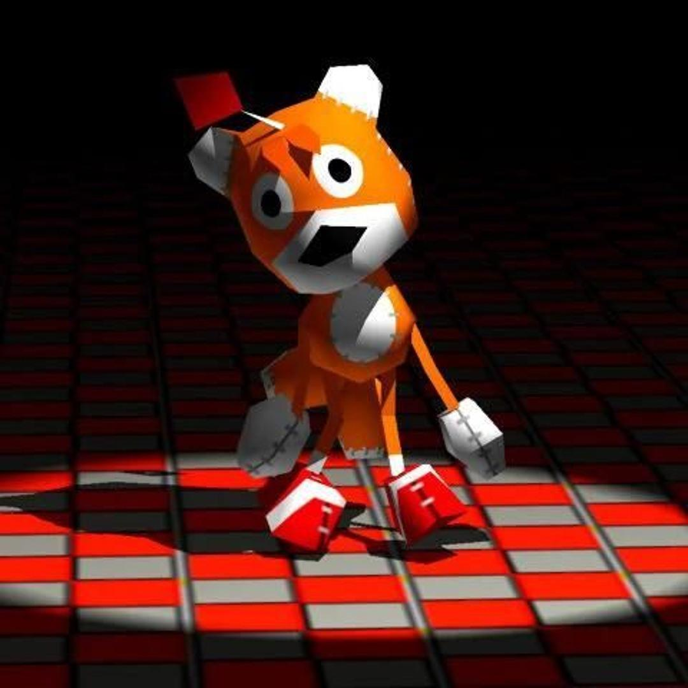
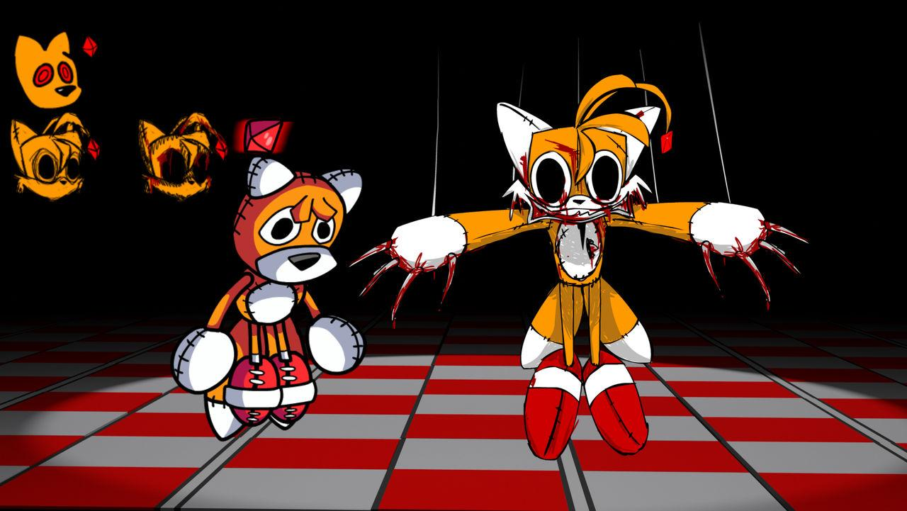

CREEPYPASTA
TAILS
DOLL
Tails Doll é uma figura associada ao universo de Sonic the Hedgehog, conhecida por sua aparência de boneco de pelúcia e por histórias de terror criadas por fãs.
O personagem ficou especialmente popular por causa de sua participação no jogo Sonic R, lançado em 1997. Com seu corpo semelhante ao de um brinquedo e sua expressão incomum, tornou-se inspiração para diversas lendas urbanas na internet.



O QUE ACONTECE?
Nas histórias de terror envolvendo Tails Doll, o personagem deixa de ser apenas um brinquedo virtual e passa a ser retratado como uma entidade misteriosa. Em algumas versões, ele aparece em lugares escuros, observa suas vítimas silenciosamente e começa a persegui-las sem motivo aparente.
Outras narrativas relacionam o personagem a acontecimentos estranhos após jogadores desbloquearem ou encontrarem Tails Doll em Sonic R. Essas histórias variam conforme a versão, misturando elementos do jogo com fenômenos sobrenaturais fictícios.

CARACTERÍSTICAS
play_arrow ORIGEM
Personagem de Sonic R, lançado em 1997, posteriormente associado a histórias de terror criadas por fãs.
person PRINCIPAL PERSONAGEM
Tails Doll, um boneco inspirado em Tails, personagem da franquia Sonic.
skull APARÊNCIA
Boneco de pelúcia com corpo amarelado, olhos escuros, nariz preto e uma joia vermelha na testa.
warning LOCAL
O universo de Sonic R e, nas histórias de terror, locais escuros, ambientes abandonados e cenários associados à presença misteriosa do boneco.

CURIOSIDADES
- Tails Doll apareceu originalmente no jogo Sonic R, não em uma história de terror.
- Sua popularidade como figura assustadora cresceu com relatos, vídeos e animações feitos por fãs.
- A joia vermelha em sua testa tornou-se um elemento recorrente nas histórias sobre o personagem.
- Não existe comprovação de que o personagem esteja associado a acontecimentos sobrenaturais reais.
